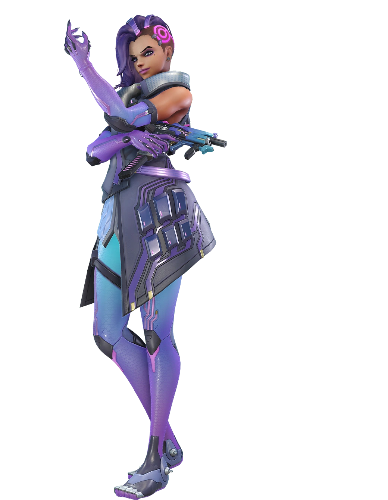

Doomfist vs Tracer

Tracer is considered a counter to Doomfist in gameplay for several reasons, largely due to her agility, speed, and ability to quickly deal damage. Here are the main factors that make Tracer an effective counter to Doomfist:
1. Mobility and Speed: Tracer's Blink ability allows her to quickly move around the battlefield, making it difficult for Doomfist to land his abilities, which are crucial for his effectiveness in combat. Her high mobility makes it hard for Doomfist to use Rocket Punch or Seismic Slam effectively against her.
2. Rewind for Sustain: Tracer's Recall ability can negate the damage done by Doomfist, allowing her to effectively "heal" herself by returning to a state where she had more health. This can be particularly frustrating for Doomfist, as landing successful hits on Tracer is already challenging, and having those hits negated can waste his efforts.
3. Burst Damage: Tracer's Pulse Pistols can deal significant damage quickly, especially when aiming at close range. Since Doomfist often engages in close combat to use his abilities effectively, Tracer can use this to her advantage, dealing rapid damage to Doomfist before he can react or escape.
4. Ultimate Ability – Pulse Bomb: Tracer's Pulse Bomb can be a deadly tool against Doomfist, especially if he's caught off-guard or already engaged in combat with other teammates. Because Doomfist tends to be in the thick of the fight due to his melee-centric playstyle, he can be an easier target for Tracer's Pulse Bomb.
5. Harassment and Distraction: Tracer excels at harassing backlines and drawing attention away from the main fight. In matchups against Doomfist, she can distract him and force him to deal with her rather than fulfilling his role of disrupting the enemy team and securing key eliminations.
Tips for fighting against Tracer:
- Tip 1 - Use Power Block when stuck with pulse bomb: If tracer sticks you with pulse bomb, you can use your power block to mitigate the damage taken from it and give yourself a free empowered punch.
- Tip 2 - Manage Your Abilities Wisely: Against a Tracer, it's crucial not to waste all your cooldowns at once. Tracer can easily bait out abilities like Rocket Punch or Seismic Slam. Use your abilities judiciously, keeping at least one escape or engagement tool available to react to her movements. The threat of your abilities can sometimes be as powerful as the abilities themselves, forcing Tracer to play more cautiously around you.
- Tip 3 - Predictive Play and Patience: Tracer thrives on unpredictability, darting in and out of combat. As Doomfist, patience and prediction are key. Wait for her to Blink before using your Rocket Punch, as this is when she's momentarily predictable. Instead of immediately engaging, observe her Blink patterns to better predict her next move.
Remember, fighting Tracer as Doomfist is as much about mind games and prediction as it is about mechanical skill. By using your abilities wisely and understanding Tracer's likely moves, you can turn the tables on her and secure the upper hand.
Doomfist vs Roadhog
Roadhog is considered a counter to Doomfist for several reasons, mainly due to his ability to withstand Doomfist's burst damage and disrupt Doomfist's mobility and combo potential with his hook. Here are the key factors that make Roadhog a formidable counter to Doomfist:
1. High Health and Self-Heal: Roadhog's large health pool and his Take a Breather ability, which allows him to heal a significant portion of his health, make it difficult for Doomfist to secure a kill on him. Doomfist thrives on being able to quickly eliminate targets, but Roadhog's survivability directly undermines this strategy.
2. Chain Hook Disruption: Roadhog's Chain Hook is a direct counter to Doomfist's mobility. Doomfist relies on his abilities to move around the battlefield and engage or disengage effectively. Roadhog's hook can interrupt Doomfist mid-ability, pulling him into an unfavorable position and leaving him vulnerable to Roadhog and his team's attacks.
3. Close-Range Damage: Roadhog's Scrap Gun deals significant damage at close range, which is precisely where Doomfist operates. If Roadhog hooks Doomfist, he can follow up with a point-blank shot and a melee attack, potentially eliminating Doomfist before he has a chance to escape.
4. Surviving Doomfist's Combo: Even if Doomfist manages to initiate his combo on Roadhog, the combination of Roadhog's high health and his ability to quickly heal means he can often survive Doomfist's initial burst. This leaves Doomfist vulnerable to counter-attack, especially if his abilities are on cooldown.
5. Less Reliance on Abilities for Damage: Unlike Doomfist, whose damage output is heavily reliant on his abilities, Roadhog can consistently deal damage with his Scrap Gun. This means that even if Doomfist uses his abilities to try and disrupt Roadhog, Roadhog can still retaliate effectively.
Because of these factors, Roadhog players can effectively neutralize Doomfist's threat in many scenarios, making him a solid counter-pick in matches where Doomfist is proving to be problematic.
Tips for fighting against Roadhog:
- Tip 1 - Bait Out the Hook: Roadhog's Chain Hook is his most dangerous tool against Doomfist, as it can interrupt your abilities and leave you vulnerable. Try to bait it out by using quick movements or by staying out of its range. Once the hook is on cooldown, you have a window to engage.
- Tip 2 - Prioritize Your Abilities Wisely: Your Rocket Punch can be a double-edged sword against Roadhog. While it's tempting to use it for damage, consider saving it for disengagement unless you're confident you can secure a kill or significantly disrupt Roadhog's position. If roadhog has closed the distance, remember to use your powerblock to mitigate his damage and potentially get an empowered punch.
- Tip 3 - Focus on Disruption Over Elimination: It might be difficult to eliminate Roadhog by yourself due to his self-healing abilities. Instead, focus on disrupting his positioning and isolating him from his team. Knocking him into your team with Rocket Punch or displacing him with your combos can make him an easier target for your teammates.
Remember, playing against Roadhog as Doomfist is about outsmarting and outmaneuvering him. Focus on disrupting his gameplay, and always be aware of the risks of getting hooked.
Doomfist vs Sombra
Tips against fighting Sombra:
- Tip 1...
- Tip 2...
- Tip 3...